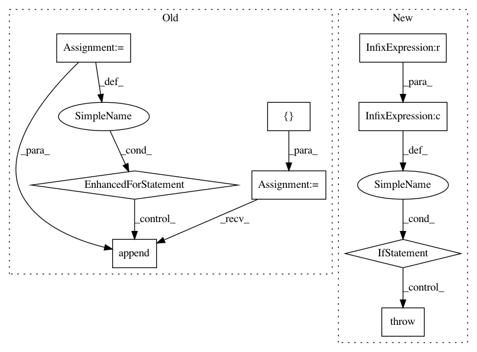

0d97bc0bb3db40017f1278d6c1f292ea0f789ab0,gpflow/optimizers/mcmc.py,SamplingHelper,__init__,#SamplingHelper#Any#Any#,54
Before Change
):
assert all([isinstance(p, (Parameter, tf.Variable)) for p in model_parameters])
self._model_parameters = model_parameters
self._target_log_prob_fn = target_log_prob_fn
self._parameters = []
self._unconstrained_variables = []
for p in self._model_parameters:
self._unconstrained_variables.append(
p.unconstrained_variable if isinstance(p, Parameter) else p
)
self._parameters.append(p)
@property
def current_state(self):
Return the current state of the unconstrained variables, used in HMC.
After Change
def __init__(self, target_log_prob_fn: LogProbabilityFunction, parameters: Parameters):
if not all([isinstance(p, Parameter) and p.prior is not None for p in parameters]):
raise ValueError(f"Expected only parameters with priors")
self._parameters = parameters
self._target_log_prob_fn = target_log_prob_fn
self._variables = [p.unconstrained_variable for p in parameters]
In pattern: SUPERPATTERN
Frequency: 3
Non-data size: 9
Instances
Project Name: GPflow/GPflow
Commit Name: 0d97bc0bb3db40017f1278d6c1f292ea0f789ab0
Time: 2020-03-27
Author: art.art.v@gmail.com
File Name: gpflow/optimizers/mcmc.py
Class Name: SamplingHelper
Method Name: __init__
Project Name: NifTK/NiftyNet
Commit Name: 534c4dc7423681faab78d1829c1ec3c31ffb8330
Time: 2018-01-30
Author: wenqi.li@ucl.ac.uk
File Name: niftynet/layer/resampler.py
Class Name: ResamplerLayer
Method Name: _resample_inv_dst_weighting
Project Name: keras-team/keras
Commit Name: 2ab9f0ef616c6d05124bdf9c81eb542d73f8e5b6
Time: 2015-06-30
Author: francois.chollet@gmail.com
File Name: keras/layers/containers.py
Class Name: Graph
Method Name: get_input